Люди любят музыку. Многие умеют играть на музыкальных инструментах. А некоторые пробуют импровизировать и даже сочинять музыку. Электронные музыкальные инструменты можно подключать к компьютеру и получать дополнительные творческие возможности. Это вроде бы простое дело, но большинство дешёвых китайских адаптеров USB-MIDI работают посредственно. Кому интересно, как я сделал свой MIDI2USB-адаптер, приглашаю читать
Пару лет назад мой племянник, который учится музыке, начал импровизировать и сочинять музыку. Мне хотелось, чтобы его творчество не пропало, но записывать его музыкальные этюды удавалось только на диктофон. Качество такой записи было неудовлетворительным. Хотелось осуществлять запись нот напрямую в Cubase или MuseScore, а затем их редактировать. Для этого я решил купить китайский адаптер (конвертер) USB-в-MIDI.
Анекдот в тему
Отец ведёт сына в первый класс и говорит:
— Вот если будешь хорошо учиться, я тебе куплю компьютер!
— Пап, а если плохо?
— Тогда куплю фортепьяно!
Такой кабель-адаптер стоит дёшево и, как оказалось, работает плохо. Передача данных от синтезатора (электрического пианино) в компьютер не работает. Если играть одним пальцем, то несколько нот удаётся записать, а когда берёшь аккорд или играешь гаммы, то адаптер зависает и превращается в кирпич. Другое направление, т.е. передача данных из компьютера в синтезатор работает хорошо. В отзывах многих покупателей можно найти подобные истории.
В интернете есть немало дискуссий как улучшить или доработать китайский адаптер. В некоторых версиях этого адаптера предусмотрен, но не распаян оптрон, который обеспечивает гальваническую развязку компьютера и синтезатора. Увы, в моём случае доработка была затруднительна, т.к. вместо оптрона установлены два NPN-транзистора. Отмечу, что MIDI-стандарт прямо указывает использовать оптоизолятор, например, PC900V или 6N138. Схожими характеристикам обладают оптопары H11L1M (DIP-8) или H11L1SM (SO-6). Можно использовать и другие компоненты с подходящими параметрами.
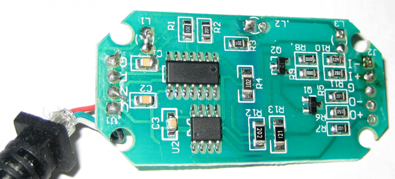
Рис.2. Китайский адаптер в процессе демонтажа. Фото автора.
На фото видно, что в корпусе достаточно места чтобы разместить оптоизолятор и сопутствующие элементы. Некоторые умельцы выпаивают имеющиеся компоненты и на их место устанавливают оптоизолятор с «обвесом». Очевидно, что для этой операции требуются не только знания, но и хорошая моторика рук.
Но недостаточно обеспечить оптическую изоляцию музыкального инструмента и компьютера. Требуется ещё точный кварцевый генератор или резонатор, чтобы обеспечить тактирование последовательного интерфейса UART в соответствии со стандартом MIDI. В китайском адаптере, который я купил, отсутствует не только оптопара, но и кварцевый резонатор. Конечно, существуют микросхемы, в которых блоки тактирования калибруются на заводе, но тут ничего подобного нет. В общем, работоспособность этого китайского изделия низкая. Существуют адаптеры, построенные на микросхеме CH345 – преобразователе USB в MIDI в корпусе SSOP-20, но это не мой случай. Микросхема CH345 имеет аппаратные USB-метки Vendor ID: 1a86, Product ID:752d. Впрочем, любая «левая» микросхема может выдавать (и выдаёт) такие же идентификаторы и даже может «притвориться» чем угодно.
Последний небольшой недостаток, который я выявил в китайском адаптере – это программное обеспечение (прошивка). Если говорить точнее – это малый размер буфера для конечных точек (EndPoints), всего по 8 байт. Этого достаточно для передачи нажатых нот, потому что MIDI-сообщение по USB интерфейсу состоит из 4 байт (номер кабеля, номер команды и 2 байта данных). А вот всякие расширения, например SysEx, могут быть большего размера.
Через некоторое время я купил другой кабель-адаптер, который носил громкое название “Professional USB MIDI Interface”. Этот адаптер стоил существенно дороже и работал значительно лучше, но всё равно с ошибками. Проявлялось это в том, что спустя несколько минут игры на синтезаторе, он вдруг начинал пропускать нажатия клавиши или наоборот – не воспринимал отпускание клавиши. Я был разочарован результатами работы китайских адаптеров я и решил последовать совету: «Если хочешь сделать что-то хорошо, то сделай это сам».
Сначала надо было продумать схему будущего устройства и изучить опыт других инженеров. Имеющийся адаптер внешне выглядел очень хорошо, поэтому я решил использовать от него корпус, светодиоды и экранированные кабели. Тем более, что в Москве MIDI-кабели стоят дороже, чем готовый китайский адаптер. Китайскую плату я вытащил, измерил её габариты и стал изучать MIDI-стандарт и удачные MIDI-проекты в открытом доступе.
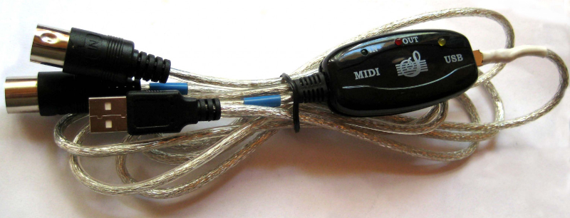
Рис.3 Адаптер USB-MIDI в корпусе и с кабелями.
На момент написания этой статьи мне известны несколько интересных проектов:
Электрические принципиальные схемы во всех проектах содержат много типовых фрагментов, основанных на рекомендациях стандарта MIDI. Поэтому оставалось выбрать микроконтроллер с поддержкой USB режима Full Speed, найти в продаже оптрон PC900V и розетку DIN-5 (MIDI).
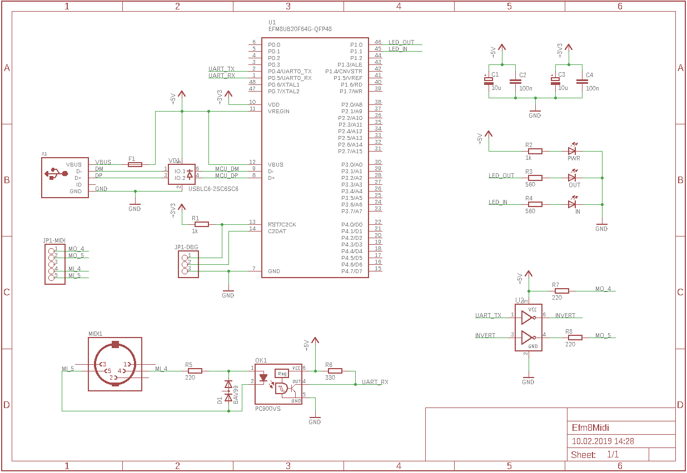
Принципиальная электрическая схема платы
Сердцем моего MIDI2USB адаптера стал 8-битный микроконтроллер EFM8UB20F64G фирмы Silicon Laboratories. Мне он очень нравится, и я использую его везде, где могу. Этот контроллер является преемником (после ребрендинга) контроллера С8051F380, который пришёл на смену легендарному C8051F320 – удачной разработке фирмы Cygnal, которую в 2003 купила SiLabs.
Перечислю свои аргументы в пользу микроконтроллера EFM8UB20F64:
Программировать этот контроллер приятно, т.к. регистров мало и можно сосредоточиться на решении прикладной задачи. Увы, арифметические операции (особенно 32-битные) выполняются медленно, но в остальном EFM8 хорош. Разработка программного обеспечения для USB-устройств – это не простая задача. И тут есть главное преимущество контроллеров SiLabs – это библиотеки USBXpress, VCPXpress, USB Device API. Даже фирма Texas Instruments в своих платах SmartRF использует контроллеры C8051F320.
Оптрон – это второй по важности компонент в адаптере. Я решил взять Sharp PC900V, потому что именно он указан в рекомендуемой схеме MIDI-спецификации. Особенность этого оптрона – быстрые времена включения и выключения (1мкс и 2мкс), а также наличие цифрового выхода. Но есть и недостатки – большие размеры микросхемы (7х10мм) и выгорание на 50% через 5 лет эксплуатации. Габариты оптрона не позволили разметить все компоненты на одной стороне платы. Ещё мне не хотелось отказываться от разъёма MIDI, который занимал много места.
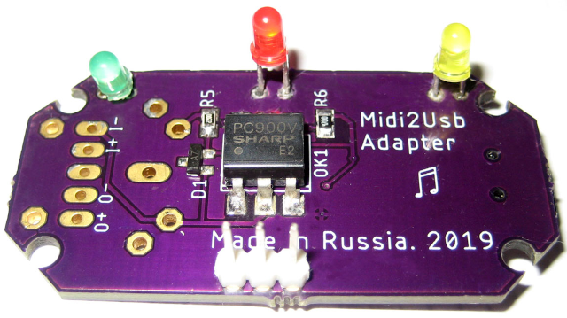
Рис.4 Задняя сторона платы с оптроном PC900V и светодиодами. Фото автора.
Выходной каскад собран по рекомендованной стандартом схеме на логической микросхеме 74LVC2G04, состоящей из двух инверторов. Основная цель этого компонента – преобразование уровней логических сигналов из 3В => 5В и обеспечение выходного тока не менее 10 mA.
Ещё анекдот
На конкурсе песни выступает чукча:
-Увезу тебя я в тундру, зелёный, увезу к седым снегам, белой шкурою медвежьей, красный, брошу их к твоим ногам…
И так всю песню. Председатель жюри спрашивает:
— А почему у вас в песне слова какие-то странные?
— Цветомузыка, однако!
Остальные компоненты выполняют вспомогательные функции и не оказывают существенного влияния на работу устройства. Резисторы, конденсаторы, диоды и светодиоды могут быть заменены в разумных пределах. Вместо разъёма mini-USB можно поставить micro-USB или сделать штыревой разъём под пайку кабеля, как делают китайцы. Разъём MIDI занимает много места и в корпус не помещается, поэтому он используется только в версии адаптера без корпуса. Сигналы MIDI-IN и MIDI-OUT выведены на штыревой разъём для распайки кабеля. В общем, следовало бы скорректировать расположение светодиодов и разъёмов для их оптимального расположения в корпусе.
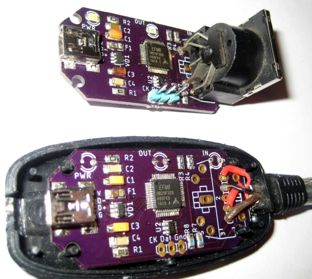
Рис.5 Отладочная и коробочная версии адаптера MIDI2USB. Фото автора.
Общий ток потребления не превышает 50 mA. Он складывается из следующих частей:
Двухслойная печатная плата была изготовлена американцами в OSH Park, толщина 1.6мм, медь 0.035мм, материал FR-4.
Создание программного обеспечения для оборудования – важный и ответственный этап разработки. К счастью, во всех современных операционных системах есть драйверы для MIDI устройств, подключаемых к порту USB. Задача сокращается и требуется написать только прошивку (firmware) для адаптера.
Обычно я использую Keil uVision PK51 совместно с Configuration Wizard 2, иногда IAR Embedded Workbench, и совсем редко SiLabs Simplicity Studio. Каждая среда имеет достоинства и недостатки. В этом проекте я решил использовать IAR, потому что хотелось иметь «С с классами». Кроме того, компилятор IAR предоставляет доступ ко всем битам системных регистров. Например, P2_bit.B0 = 1; или PCA0MD_bit.WDTE = 0;
Нет необходимости использовать «магические константы» или многоэтажные битовые выражения, которыми пестрят CMSIS или «SI_EFM8UB2_Register_Enums.h». Увы, весь этот функционал объявлен в файле «ioEFM8UB20F64G.h», который оказался не совместим с библиотеками «si_toolchain.h» (например, макрос B0..B3). Переводить проект в Keil uVision PK51 я не стал, а просто писал совместимый код на С для всех сред разработки.
Посмотрим на функцию main() с настройкой портов, периферии и главным циклом.
int main( void )
{
WDT_Init(); // Disable WDTimer (not used)
PORT_Init(); // Initialize ports (UART, LEDs)
SYSCLK_Init(); // Set system clock to 48MHz
UART0_Init(); // Initialize UART0 @31250, 8-N-1
USBD_Init( &usbInitStruct ); // Initialize USB, clock calibrate
LED_IN = 1; // Blink LED
LED_OUT = 1; // Blink LED
IE_EA = 1; // Global enable IRQ
while(1)
{
//--- MIDI => USB
if( nMidiCount > 0 )
{
IE_EA = 0; // Begin: Critical section
if( USB_STATUS_OK==USBD_Write(EP1IN,aMidiBuffer,nMidiCount,false) )
{
nMidiCount = 0; // Reset MIDI data byte counter
}
IE_EA = 1; // End of: Critical section
LED_IN = 0; // Turn off input LED
}
//--- USB => MIDI
if( nUsbCount )
{
uint8_t i;
LED_OUT = 1; // Turn on Led on New packet
for(i = 0; i < nUsbCount; i++) // Process every data byte
{
USB2MIDI( aUsbBuffer[i] ); // Convert USB packet into MIDI
}
nUsbCount = 0; // Reset counter
USBD_Read(EP2OUT, aUsbBuffer, sizeof(aUsbBuffer), true);
LED_OUT = 0; // Turn off Led, when done
}
}
}
Библиотека фирмы SiLabs для USB-устройств состоит из набора подпрограмм, которые компилируются и включаются в проект в зависимости от настроек в файле «usbconfig.h». Это очень напоминает библиотеку «libusb, V-USB», которую можно встретить в коде для микроконтроллеров фирмы Atmel (ныне Microchip). Надо отметить, что у SiLabs получилась хорошая и удобная библиотека с точки зрения программиста.
Важную роль в работе любого USB-устройства играют описатели (дескрипторы) устройства, конфигурации и интерфейсов. С помощью этих дескрипторов устройство сообщает хосту (компьютеру) о своих требованиях, возможностях, параметрах и т.д. Функция обработки запросов дескрипторов обычно имеется в каждой USB-библиотеке, а от программиста требуется лишь правильно заполнить структуры данных, содержащих эти дескрипторы.
Код с дескрипторами
SI_SEGMENT_VARIABLE
(usbDeviceDesc[], const USB_DeviceDescriptor_TypeDef, SI_SEG_CODE) =
{
USB_DEVICE_DESCSIZE, // bLength, 18 bytes
USB_DEVICE_DESCRIPTOR, // bDescriptorType, 1
htole16(0x0110), // bcdUSB Ver, 1.10
0x00, // bDeviceClass, 0 for Audio
0x00, // bDeviceSubClass, 0 for Audio
0x00, // bDeviceProtocol, 0 for Audio
SLAB_USB_EP1IN_MAX_PACKET_SIZE, // bMaxPacketSize0, 64 bytes
htole16(0x1209), // idVendor, Free GPL (SiLabs 0x10C4)
htole16(0x7522), // idProduct
htole16(0x0100), // bcdDevice, 1.00
0x01, // iManufacturer string
0x02, // iProduct string
0x03, // iSerialNumber (no serial string)
0x01 // bNumConfigurations
};
Обо всех дескрипторах, топологии и терминологии подробно и детально написано в стандарте «Universal Serial Bus Device Class Definition for MIDI Devices». А для быстрого старта и погружения в тему достаточно изучить информацию, которую предоставляют программы «usbview.exe» из пакета Windows Driver Kit 7600 или «USB Descriptor Dumper». Кое-что можно даже скопировать к себе в программу.
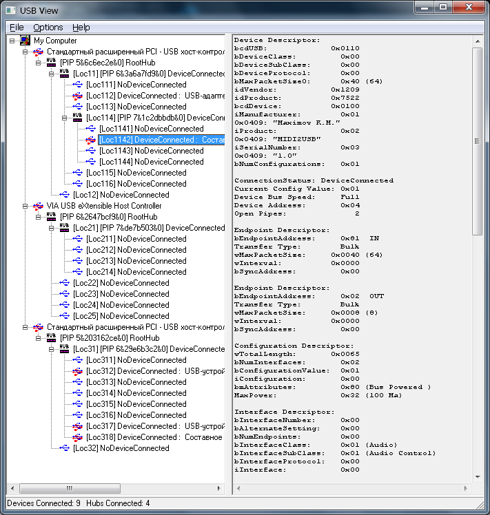
Рис.6 Информация о дескрипторах в программе «usbview.exe»
Дескрипторы и соответствующие массивы и структуры размещается во флэш-памяти микроконтроллера (сегмент кода), потому что эти данные не изменяются (константы). Хранение констант во флэш-памяти – типичный программистский приём, который позволяет экономить оперативную память.
Следует обратить внимание на поля Vendor_ID и Product_ID в структуре описателя устройства. Это пара чисел для уникальной идентификации USB-устройства. Чтобы получить для своего устройства такой номер надо заплатить денег организации USB-IF или направить запрос владельцу существующего Vendor_ID (производителю микроконтроллеров) и получить Product_ID. А можно, например, как китайцы использовать чужие наиболее подходящие VID & PID. Для открытых проектов есть вариант получить бесплатно Product_ID.
Ещё один момент, на который следует обратить внимание при разработке USB-устройств звукового класса MIDI Streaming – это разъёмы (Jack). Разъёмы – это воображаемые (виртуальные) сущности для описания топологии и связей между устройством и хостом. Они бывают входные (In Jack) и выходные (Out Jack), внутренние (Embedded) и внешние (External). У каждого разъёма есть уникальный идентификатор Jack_Id (число от 0 до 15). Выходные разъёмы содержат номер источника Source Id, т.е. номер разъёма для подключения. Наконец, поверх образованных каналов (потоков ввода и вывода) работают звуковые конечные точки (audio end-point, EP). Это почти обычные Bulk EP, у которых в дескрипторах есть информация о привязке к разъёму.
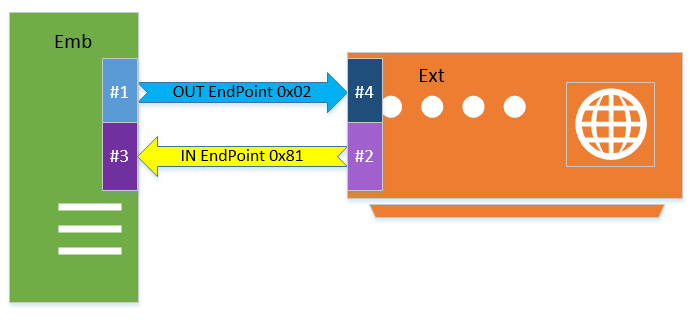
Рис. 7 Разъёмы Jacks и виртуальные потоки в USB (класс MIDI).
MIDI Jack Descriptors
// EMB: IN Jack #1 <-----> EXT: OUT Jack #4
// EMB: OUT Jack #3 <-----> EXT: IN Jack #2
//--- Class-Specific MS Interface Header Descriptor, p.40
USB_MIDI_INTERFACE_DESCSIZE, // bLength, 7 bytes
USB_CS_INTERFACE_DESCRIPTOR, // bDescriptorType, 0x24
MIDI_CS_IF_HEADER, // bDescriptorSubtype, 0x01
0x00, // bcdADC(LSB)
0x01, // bcdADC(MSB), 0x0100 (version)
0x41, // wTotalLength(LSB), 65 bytes
0x00, // wTotalLength(MSB)
//--- MIDI IN JACK EMB(it connects to the USB OUT Endpoint), p.40
USB_IN_JACK_DESCSIZE, // bLength, 6 bytes
USB_CS_INTERFACE_DESCRIPTOR, // bDescriptorType, 0x24
MIDI_CS_IF_IN_JACK, // bDescriptorSubtype, 0x02
MIDI_JACK_TYPE_EMB, // bJackType, 0x01 (embedded)
1, // bJackID, #1
0, // Jack string descriptor, unused
//--- MIDI IN JACK EXT, p.40
USB_IN_JACK_DESCSIZE, // bLength, 6 bytes
USB_CS_INTERFACE_DESCRIPTOR, // bDescriptorType, 0x24
MIDI_CS_IF_IN_JACK, // bDescriptorSubtype, 0x02
MIDI_JACK_TYPE_EXT, // bJackType, 0x02 (external)
2, // bJackID, #2
0, // Jack string descriptor, unused
//--- MIDI OUT JACK EMB (connects to IN Endpoint), p.41
USB_OUT_JACK_DESCSIZE, // bLength, 9 bytes
USB_CS_INTERFACE_DESCRIPTOR, // bDescriptorType, 0x24
MIDI_CS_IF_OUT_JACK, // bDescriptorSubtype, 0x03
MIDI_JACK_TYPE_EMB, // bJackType, 0x01
3, // bJackID
1, // bNrInputPins
2, // baSourceID, this <=> Jack #2
1, // baSourcePin
0, // iJack, unused
//--- MIDI OUT JACK EXT, p.41
USB_OUT_JACK_DESCSIZE, // bLength, 9 bytes
USB_CS_INTERFACE_DESCRIPTOR, // bDescriptorType, 0x24
MIDI_CS_IF_OUT_JACK, // bDescriptorSubtype, 0x03
MIDI_JACK_TYPE_EXT, // bJackType, 0x02
4, // bJackID
1, // bNrInputPins
1, // baSourceID, this <=> Jack #1
1, // baSourcePin
0, // iJack, unused
Обмен данными в звуковом USB-устройстве класса MIDI заключается в передаче 32-битных пакетов (USB-MIDI Event Packet). Из MIDI-устройства приходят сообщения длиной 1, 2 или 3 байта. При передаче по USB к этим байтам добавляется головной байт с номером кабеля и кодом команды. Если пакет получается менее 4 байт, то он дополняется 0. В текущей версии прошивки я не заполняю нулями до 32-битной границы. Это работает. Вопрос остаётся открытым.
Например, в кабеле №1 команда нажатия клавиши Note On (время передачи 960us) преобразуется в следующий пакет:
MIDI: 0x90 0x60 0x7f => USB: 0x19 0x90 0x60 0x7f
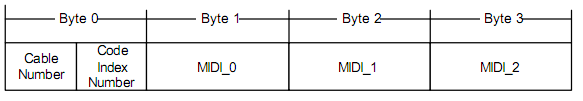
Рис.8 Схема пакета USB-MIDI Event Packet из USB спецификации.
typedef union
{
struct PACKET
{
uint8_t cable : 4; // Cable Number (we use #0)
uint8_t cin : 4; // Code Index Number (cmd: 0x08)
uint8_t cmd; // MIDI command (status byte)
uint8_t data1; // MIDI data byte #1
uint8_t data2; // MIDI data byte #2
};
uint8_t buffer[sizeof(struct PACKET)];
} MIDI_EVENT_PACKET;
Прямое и обратное преобразование выполняются функциями MIDI2USB() и USB2MIDI (). В этих функциях применён автомат состояний, когда по мере поступления входных данных функция переходит из состояния ожидания (IDLE) в состояние приёма команд (STATUS), а затем в состояние приёма данных (DATA), и, наконец, отправка данных с возвратом в исходное состояние ожидания.
В MIDI-протоколе байты данных в сущности являются 7-битными (0..127). У них всегда старший 8-ой бит установлен в 0. Команды (байты статуса) наоборот всегда идут с установленным старшим битом в 1, т.е. имеют значения от 128 до 255.
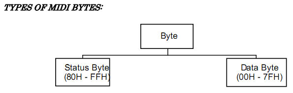
Рис. 9 Типы байтов в MIDI-протоколе.
Анекдот про разрядность чисел
Телефонный звонок:
— Алло, это квартира Сидорова Ивана Петровича?
— Hет, это квартира Каца Абрама Самуиловича.
— Извините, это 11-22-33?
— Hет, это 11-22-34.
— Hадо же! В шестом знаке ошибка, а такой эффект!
Все схемы и исходные тексты, а также готовая прошивка находятся у меня в git-хранилише. Лицензия MIT.
После монтажа платы следует запрограммировать микроконтроллер. Для этого можно использовать или фирменный/клон SiLabs C2 Debug Adapter, или J-Link v10+ (с поддержкой EFM8), или прошитый на заводе bootloader (ревизия Rev-B), или, наконец, Arduino с соответствующим скриптом. Для проверки и отладки MIDI-сообщений очень помогает программа MIDI-OX.
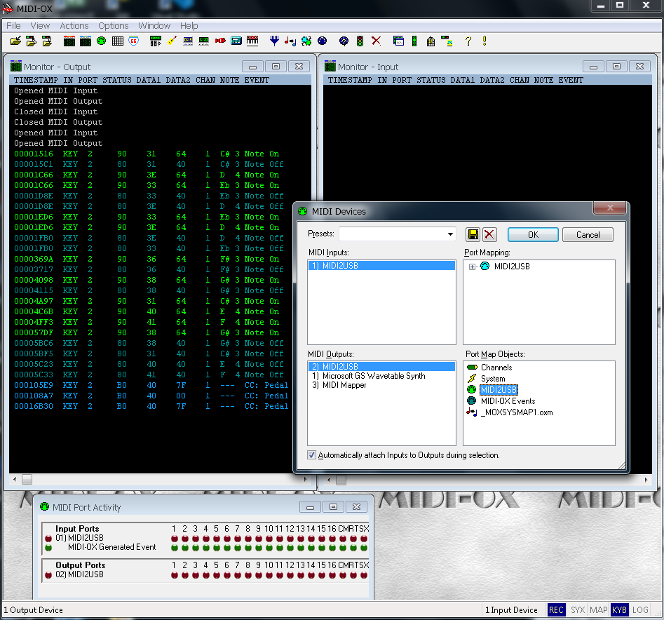
Рис.10 Интерфейс программы MIDI-OX.
Если работать с Cubase, то следует установить Asio-драйверы, потому что при использовании DirectSound и DirectInput наблюдается задержка между нажатием клавиши и воспроизведением ноты. Задержка не связана с аппаратной частью и является особенностью реализации ОС. В общем, устройство отлично выполняет свои функции с инструментом Casio CDP-100.
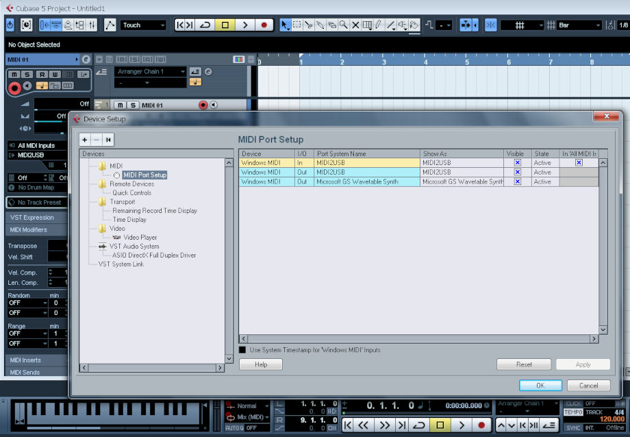
Рис.11 Интерфейс программы Cubase 5.
Экспериментальные прошивки генерировали максимально возможный поток нот и других MIDI-команд. Какофония была ужасная, но всё работало, как задумано. А с помощью MuseScore 3.2 можно записывать и воспроизводить mid-файлы.
Адаптер работает! Кажется, мне удалось сделать добротный конвертер MIDI в USB. Для своего устройства я использовал корпус, некоторые детали и кабели от китайского адаптера. Mini-USB разъём оказался глубоко в корпусе и пришлось переделывать USB-кабель и поработать напильником. Светодиоды хотя и под углом, но плотно вошли в отверстия. Требуется доработка платы под китайский корпус.
Рис. 12. Компактная разобранная вилка mini-USB.
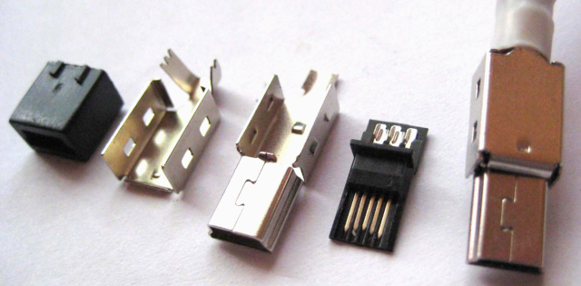
Решение применить 8-битный микроконтроллер EFM8UB20 кому-то может показаться спорным. Конечно, есть и другие варианты и контроллеры. Альтернативный путь – это выбрать сугубо аппаратное решение на преобразователе CH345 и сделать устройство по рекомендованной китайцами референс-схеме. Но мой вариант универсальный, т.к. позволяет изменить прошивку, добавить нужный функционал или исправить найденные ошибки. В конце концов я получил знания, опыт и моральное удовлетворение от законченного проекта. И, наконец, я дописал статью, а вы её дочитали.
Спасибо за внимание.